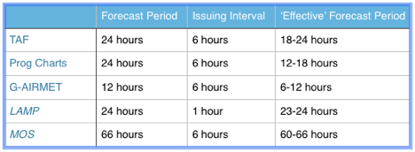

Introduction
Weekend Flyer is the easy way to plan your flights around the weather up to several days into the future. Now when you leave your home airport on Friday morning you'll be able to 'see' what the weather will most likely be on Sunday afternoon for your trip home. By drawing a picture of the future weather your pilot's license and your plane suddenly become more useful. As you can see from this chart, the typical NWS preflight weather sources: TAF, Prog Charts and G-AIRMET are of limited help making sure you can get home tomorrow if you fly somewhere today.
The NWS does have detailed forecast data for over 1500 airports in the lower-48 states called LAMP and MOS. LAMP cover the next 24 hours and MOS covers the next 2 ½ days. Unfortunately the NWS hasn't created an easy way to see LAMP or MOS forecasts. They do let you view the data one airport at a time though.
That's where Weekend Flyer comes in, it takes the LAMP and MOS data and makes the weather easily visualizable. Here is what it looks like:

All of the significant weather information is shown on a single screen. The flight categories are shown with color, cloud coverage with pie chart symbols, high winds are shown with a blowing swirl icon and thunderstorms are shown with an anvil cloud and lightning. The map behind the weather symbols is the VFR Wall Planner you often see at airports.
The screen above is showing the forecast for Wednesday 11:00Z. Changing the forecast time is done by sliding the thumb along the time control 'slider' on the bottom of the screen. The app animates the weather smoothly on even older iPads.
You can also plan your route and even set a departure time to 'simulate' your flight before you depart. Now when you change the time using the slider the airplane symbol shows where you expect to be at that time and the weather you will likely encounter.


Free one month trial. After trial continue to use flight planning features for free.
Purchase additonal weather forecasting by the month for $0.99 or purchase weather forecasting forever for $19.99.
Thomas Court Software Development, LLC
All Rights Reserved